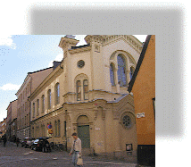
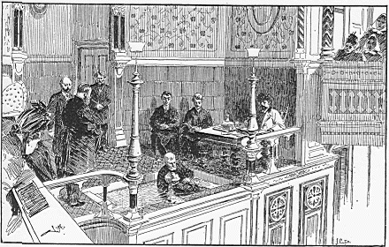

Södermalm i tid och rum. Stockholm

Ebeneserkyrkan idag: Söderhöjdskyrkan
Mera om Ebeneserkyrkans historia
Ur Arne Munthe, Västra Södermalm, 1965
Baptistkyrkan på Västra Södermalm - Ebeneserkyrkan vid Brännkyrkagatan - kom till efter enallvarlig kris inom moderförsamlingen i Katarina. Den bottnade till stor del i engenerationsmotsättning. Sedan 1878 Salemkapellet byggts
Ebeneserförsamlingen, Stockholms tredje baptistförsamling grundades den 19 augusti 1883. »Fattigprästen påSöder«, John Hedberg, hade kallats till pastor för den nya församlingen.Vid församlingens årsmöte nyårsdagen 1884 överlämnades från »ett sjukt, på fattighuset boende fruntimmer« en gåvaav en krona för ett kapell. En mötesdeltagare blev så rörd, att han gav ytterligare fem kronor, och med en summa av sexkronor startade församlingens byggnadskassa.I början av januari 1884 inköptes tomten i hörnet av Brännkyrkagatan (dåvarande Besvärsgatan) och Blecktornsgränd.Kostnaden för tomt och kyrka bars huvudsakligen av byggmästaren Fredlund och bokförläggaren Per Palmqvist. Arkitektvar A. G. Forsberg. Ebeneserkyrkan invigdes den 19 december 1886.Långsidan mot Brännkyrkagatan liksom den mot gården har fönster i två plan. Under Brännkyrkagatans nivå och medfönster mot gården ligger församlingsvåningen. Gaveln mot Blecktornsgränd upptas av ett fönsterparti med ett störremittfönster och två smala sidofönster samt därovan ett stort rosettfönster. Entrén till kyrkan finns från gavelns bådahörn.Efter det att planerna för Östra Mariaberget ändrades i slutet av 1960-talet innebärande att bebyggelsen skulle bevarasgenomfördes en genomgripande renovering och ombyggnad av den slitna kyrkobyggnaden. Den moderniserades och blevbl.a. handikappvänlig. Ägare är Baptistförsamlingen Ebeneser i Stockholm.(Ur Arne Eriksson, Kulturhus på Söder och Djurgården, 1998)
Anders Wiberg John HedbergJohn Hedberg, längre fram känd över hela landet som »fattigprästen på Söder» kom från ett enkelt,religiöst färgat hem i Askersundstrakten och var vid denna tid 25 år gammal. Som sjuttonåring hadehan vunnits för baptismen och redan året därpå börjat sin bana som kolportör i dess tjänst. Han hadesedan gått igenom Betelseminariet och var, då han kallades till Stockholm, baptistisk hjälppräst iGöteborg. Som barn hade han sett hungertågen över Tiveden nödåret 1868 och under sin förstastockholmstid fått djupa inblickar i den bottenlösa misären bland arbetarebefolkningen under bostadskatastrofens tid på 70-talet. En spontan pliktkänsla att hjälpa fattiga och nödställda, särskilt barn, varredan ett utpräglat drag i hans karaktär. Som predikant var han känd som en god talare i den drastisktfolkliga genren. Men redan hade också visat sig tecken på de negativa drag, som blir markanta hos denäldre Hedberg - härsklystnaden, misstänksamheten, den hätskt aggressiva inställningen till motståndare -vilket kan förklara Wibergs tveksamhet inför hans kandidatur. Under den första tiden i Södra baptistförsamlingens tjänst var han dessutom ur jämvikt genom hustruns död och ekonomiska bekymmer.
Det finns ingen anledning att här närmare gå in på den konflikt, som efter några år ledde tillen utbrytning ur Södra baptistförsamlingen och organiserandet av en ny söderförsamling medHedberg som ledare. Senare har Hedberg själv kommenterat händelsen med sin vanliga starkasjälvkänsla: »Det var allvarsamma och egendomliga förhållanden, som förorsakade dennaförsamlings framträdande. Hela svenska baptistsamfundet kände den storm, ur vilken hon påHerrens bud sprang fram.» Förloppet blev i korthet, att 48 medlemmar av Södrabaptistförsamlingen, till vilka sedan ytterligare 39 anslöt sig, sommaren 1883 begärdeflyttningsbetyg och meddelade sin avsikt att eventuellt organisera en egen församling. Deutflyttade bildade först en förening med C. O. Grönqvist som ordförande - han hade enspeceribod i hörnet av Krukmakargatan och Torkel Knutssonsgatan - och höll under den förstatiden till i det s.k. dalhärbärget vid Hornsgatan; på söndagarna deltog man i baptistmötena påBarnängens bomullsspinneri.
Sambandet mellan denna utbrytningsaktion och Hedbergs avsked från moderförsamlingen är ickealldeles klart. Får man lita till församlingshistoriken - vilket torde vara riktigt - har han själv sagt upp sin tjänst redan den 26 februari, medan hanenligt egen uppgift mottagit ett budskap om sitt entledigande under en vistelse i Dalsland denföljande sommaren.
| Med det växande medlemsantalet blev frågan om ett eget kyrkbygge snart aktuell - grundplåtentill insamlingen skall ha varit en krona, som för detta ändamål skänktes av en kvinna på fattighuset. Den tomt, som sedan valdes i hörnet av Besvärsgatan (Brännkyrkagatan) och Blecktornsgränd.,var centralt belägen men knappast idealisk, då byggnaden kom att ligga väl nära gatulinjen -myndigheterna skall också gjort vissa svårigheter med byggnadstillståndet. Det ekonomiskaansvaret för bygget fick till stor del bäras av bokförläggaren Gustav Palmqvist, en son till PerPalmqvist. Grundstenen lades den 26 september 1885, och den 19 december året därpå hölls denförsta allmänna gudstjänsten, då över tusen personer skall ha deltagit. Den nybildade föreningen sökte också först efter en annan predikant, innanbudet gick till Hedberg att »komma hem och tjäna». Han torde ha accepterat så mycket hellre, somföreningen samtidigt fått hyra en egen samlingslokal, Hornstullsgatan 29. Under Hedbergs ledningombildades föreningen till församling vid ett möte i Liljeholmens missionshus den 19 augusti 1883,då 76 av de 87 frondörerna var närvarande. Efter ett ord i Samuelsboken antogs |  (Första Samuelsboken 7 Kap, vers 12: Då tog Samuel en sten och reste den mellan Mispa och Sen och gav den namnet Eben-Haeser [hjälpstenen] i det han sade: "Altt härintill har Herren hjälpt oss.") |
 Baptistdop i Ebeneserförsamlingen på pastor Johan Hedbergs tid. Fattigprästen på Söder Hedbergs tjugotvååriga verksamhet som Ebeneserförsamlingens föreståndare slutade - som denbörjat - med en pinsam schism: efter en bitter konflikt med sin förut närmaste medarbetare följdehan diakonernas förslag att självmant frånsäga sig befattningen. Sedan blev han helt »fattigprästenpå Söder». Den | Efter det första decenniet räknade Ebeneserförsamlingen 357 medlemmar, mest arbetare och folk ur denlägre medelklassen. Det är av ett visst intresse att se, hur Hedberg i sin tioårsberättelse förklarar denrelativt blygsamma framgången. Som första orsak ställer han - typiskt nog - »de hårda, omildaomdömen och besynnerliga historier, som tid efter annan utsläppts att cirkulera ibland allmänhetenangående församlingen och föreståndaren, vilka historier oförståndet, elakheten och partinitet fött». Vidare pekar han på den socialistiskafritänkarrörelsen under de senaste åren, »som synbart hämmat Guds rikes tillväxt», konkurrensen frånnya extravaganta och reklambetonade religiösa rörelser - sannolikt åsyftas frälsningsarmén - vissa nyateorier om barndopet, som inpräntas bland det troende folket, och till sist »statskyrkolivetsuppflammande». Från sekelskiftet, då en medhjälpare anställdes till Hedberg och han själv börjadesläppa ifrån sig ledningen, växte församlingen påtagligt, så att den vid tjugofemårsjubiléet 1908 kunderäkna 575 medlemmar. För närvarande är medlemsantalet något över 300, icke endast söderbor. |
När verksamheten blivit så omfattande, att Hedbergs eget hem icke längre rimligen kunde fyllauppgiften att dessutom vara expedition, barnhem och härbärge åt nödställda, fick han hösten 1903en lokal i Bastugatan 28, ett gammalt hus med låga rum och obekväma trappor; det står ännu kvar,fast väl bara för en kort tid. Ett reportage i Stockholms Dagblad 1909 ger en inblick i hur det gicktill på denna originella fattigvårdsexpedition:
»Pastor Hedberg sitter i sitt lilla blåtapetserade mottagningsrum likt en fältherre i sitt tält underbrinnande batalj. En 'adjutant' bevakar ingången och släpper in de hjälpsökande en och en i sänder. Enannan sitter vid ett bord och skriver upp deras namn, under det en tredje och en fjärde stå till hakan isäckar och lådor, sysselsatta med att fylla den ena glupska kassen efter den andra med födoämnen . . .Genom den lilla dörren ut till förstugan går en jämn ström av karlar med potatissäckar och brödlådor,damer som lämna avgifter eller bidrag, brevbärare och stadsbud med lådor och paket, som, sedan deöppnats, visa sig innehålla allt möjligt, från kaffegrädde tillgaloscher. Det ligger kamp i luften, det är som rustade man sig till en belägring, och så är ju ocksåförhållandet, ty nöden belägrar dörren. Men nöden är tyst; fastän en stor skara män och kvinnor ståpustande ute i väntrummets tjocka luft, höres nästan icke ett ljud därifrån.»
Med de resurser, som Hedbergs hjälpverksamhet så småningom fick att röra sig med, undgickden icke att dras in i den offentliga kritikens rampljus. Från 1900, samtidigt som Hedberg öppnadesitt första barnhem, började den stora striden kring fattigprästen och hans verksamhet, som sedanpågick med oförminskad häftighet ända till Hedbergs död. För den tillspetsat polemiska tonen imeningsutbytet bär Hedberg själv en stor del av ansvaret genom den hätskt aggressiva attityd, hanalltid visade, då hans verk blev kritiserat. I sina inlägg i pressen och de försvarsbroschyrer han gavut, spelade han alltid den förolämpade martyrens roll och slog ofta blint och obehärskat mot sinamotståndare. Kyrkoledningen i Maria kom från början i skottlinjen. Hedberg och kyrkoherde Eklundhade tidigare samarbetat i Föreningen för välgörenhetens ordnande, och egentligen var de två icke såolika varandra. Men i praktiken var Hedbergs mera spontant okritiska hjälpverksamhet rakamotsatsen till den form av välgörenhet, som F.V.0., och även prästerskapet i församlingarna, ansågvara sund och riktig.
Under rubriken Från de eländas värld. Ett nödrop lät Hedberg i början av december 1900 i SvenskaMorgonbladet trycka av ett brev från en hustru, som klagade över att hon förgäves vänt sig tillfattigvård, polis och kyrkoherde utan att få hjälp. Kyrkoherde Eklund kände sig utpekad och satte sig iförbindelse med Hedberg, som upplyste om att familjen tillhörde Adolf Fredriks församling. SedanEklund underrättat kyrkoherden där, E. D. Heüman, utbröt en våldsam tidningspolemik, som klartbelyser den principiella skillnaden mellan Hedbergs hjälpverksamhet och den offentliga fattigvården.Typisk är följande replikväxling i tidningen Vårt Land:
»Till sist vill jag säga», deklarerade Hedberg,»att jag vid mitt arbete bland de fattiga icke anser mig böra låta mig ledas av någon annan princip änhans, som låter sin sol uppgå över onda och goda och låter regna över rättfärdiga och orättfärdiga».Heüman replikerade: »Den, som hr Hedberg till slut säger sig vilja likna, låter visserligen både regn ochsol komma alla till godo, men Han har aldrig utdelat pengar åt lättja och slarv.» Då Hedberg senare rekapitulerade striden i en särskild broschyr, Hvad ondt har jag gjort?, anser han sig vara alldeles klar påsituationen: »Som man ser, var redan nu offentlig strid mot mig planerad och två av Stockholmskyrkoherdar hjälptes åt i den ädla kampen.»
En annan stridsfråga, där också stadens folkskoleinspektör blev engagerad, gällde avgångsbetygenoch mantalsskrivningen för de skaror av barn, som Hedberg tog hand om för att skicka ut pålandet. Skolmyndigheterna ville ha garantier för, att barnens fortsatta skolgång icke blevförsummad, och Hedberg bestred energiskt, att här förelåg några risker. Mot sin hemförsamlingspastorsexpedition hade han särskilda anklagelser: »Maria församlings pastorsexpedition är denenda i Stockholm, där man mig veterligt till ovärdiga fäder och mödrar utlämnat adresser, dit barnsänts för att skyddas undan lastbara föräldrars hem och inflytande. Det är också den enda pastorsexpedition, där man upplyst folk om, att till mig lämnade skriftliga målsmansfullmakter för barnenvoro utan betydelse, och att de därför kunde när som helst saklöst hämta barnen åter.»
I kyrkoherden i Maria såg Hedberg med tiden, ledd av sin utpräglade misstänksamhet, en av sinaargaste motståndare och den, som från början satt i gång angreppen mot honom. Vid flera tillfällendeklarerade Eklund offentligt sin uppfattning, bl.a. i en artikel i Aftonbladet, Hur bör den enskildavälgörenheten lämpligen ordnas och utöfvas, och i en intervju för Dagens Nyheter, som fick titelnFattigvårdsmyndigheterna på Söder äro missnöjda med fattigprästen. Eklund ansåg, att denHedbergska hjälpverksamheten var okritisk, oordnad och planlös och framför allt icke underkastadnågon ordentlig kontroll. Han anklagade Hedberg för bristande samarbetsvilja; sade också rent ut,att han ansåg hela verksamheten obehövlig, då alla nödlidande kunde få hjälp av fattigvården.
Hedberg slog tillbaka - icke sällan under bältet: Eklund hade aldrig nedlåtit sig till att besöka hansexpedition utan litat till skvallervägen - »Tänk om jag skulle samla ihop alla historier, som äro isvang om Hr Kyrkoherden och bedöma Hr Kyrkoherdens verksamhet efter dem, vore ett sådanttillvägagångssätt värdigt?» Hur kunde kyrkoherden och ledamoten av fattigvårdsnämnden K. A.Eklund som ordförande i Philipsenska skolinrättningens styrelse stå till svars med att ett»krogpalats» inrymdes i en egendom, som av fromma stiftare är skänkt till fattiga barns uppfostranoch vård?
Den fas av striden kring »fattigprästen på Söder» - en smått legendarisk gestalt i Maria församlingshistoria - som här relaterats, har mest blottat verksamhetens brister och ledarens uppenbara mänskligasvagheter. Om honom själv har hans senaste levnadstecknare träffande sagt, att han icke var någothelgon och icke heller en stor syndare men för den skull icke en vanlig människa. Hans känsla för deurspårade, fattiga och nödställda, särskilt barnen, var djup och äkta, och vad han ensam åstadkom medsin väldiga energi och initiativkraft ett stort barmhärtighetsverk i kristen anda. I mycket var det en pioniärinsats ochskall bedömas som en sådan. Det sprang fram under en tid, då den kommunala barnavården ännu ickevar organiserad och avslöjade visserligen sina svagheter, sedan en sådan organisation kommit till stånd.